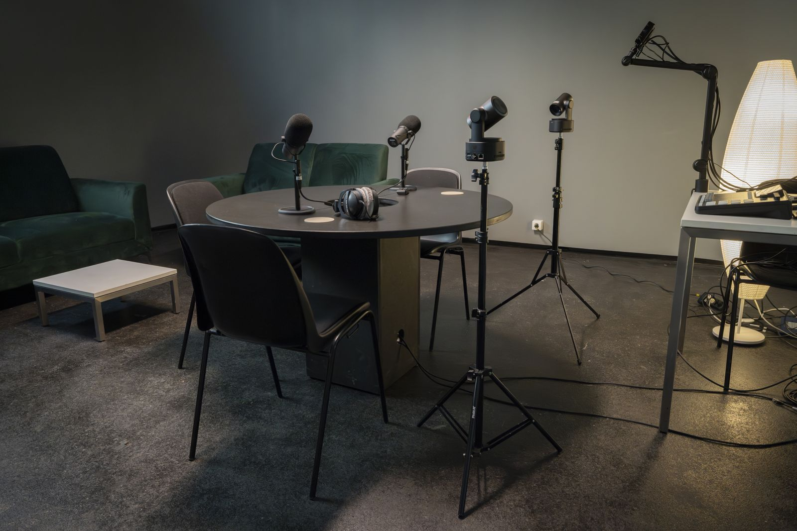

Produire / Captation
Salle de podcast vidéo
Captation · Podcast
Un studio modulable avec trois caméras 4K motorisées qui suivent les intervenants sans opérateur caméra.

Caméras3 caméras PTZ 4K
RégieOBSBOT Talent
Livraisonrushes bruts sous 48 h
Un opérateur installe la lumière, les caméras et le son pendant la première heure. Les rushes sont livrés bruts, sans montage, sous 48 heures et conservés 14 jours. La post-production se demande à part.
Idéal pour
Podcast vidéoInterviewTable ronde
Matériel
Caméras
- Modèle3 OBSBOT Tail 2, caméras PTZ 4K avec suivi automatique par IA
- Capteur1/1,5 pouce, 50 MP
- Zoomoptique 5x, hybride jusqu'à 12x
- Ouverturef/1,8 à f/3,0
Régie et enregistrement
- Régie compacte OBSBOT Talent
- Un fichier programme, ou un fichier par caméra selon la configuration
- Usage type : un plan large, une caméra sur l'animateur, une sur l'invité